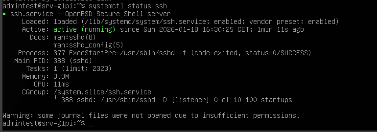
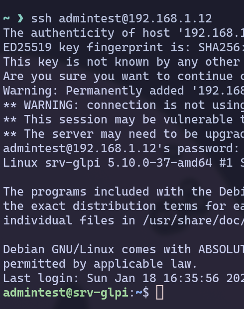

Simplon - WildCodeSchool - Test positionnement¶
Brief part 4 - Installation GLPI sur Debian 11.6¶
Préparation et installation du système¶
Créer une VM en Debian 11.6 pour y installer GLPI.
| CPU | RAM | Stockage |
|---|---|---|
| 1 | 2 Go | 20 Go |
Définir le nom sur srv-glpi et le domaine sur rue25.com. Après création du compte admin, créer la partition disque.
Décocher le Destktop Environment et rester en Headless puis activer le SSH conformément aux consignes du brief et afin d’éviter une reconfiguration post-installation.

L'os démarre après l'utilitaire d'installation. L'adresse IP attribuée est le 192.168.1.12.
Configuration initiale système¶
Vérifier si SSH s'est mis en marche correctement, cela permet de poursuivre le travail depuis un poste remote.
 
SSH fonctionnel, prouvé par la possibilité de s'y connecter depuis un autre PC.
Installer sudo via su- puis ajouter l'utilisateur au groupe sudo. Nécessaire pour l'installation des paquets. Ensuite se référer à la documentation officielle de GLPI ici :
- https://glpi-install.readthedocs.io/en/latest/prerequisites.html
- https://glpi-install.readthedocs.io/en/latest/install/index.html
Installation des dependencies¶
Tout d'abord, installer les paquets nécessaires conformément au paragraphe "prerequisites" et "web server" de la documentation :
Configuration database¶
Initialiser la base de données avec le compte administrateur dédié pour éviter l'accès root.
Installation GLPI¶
Ensuite, télécharger l'archive GLPI avec :
En cas de doute, utiliser "man tar" pour identifier la bonne commande d'extraction puis :
Résumé de la structure :
| Instance | Configuration | Data | Logs |
|---|---|---|---|
| /var/www/glpi | /etc/glpi | /var/lib/glpi/files | /var/log/glpi |
Déplacer le fichier :
Donner les permissions récursives:
Ranger les fichiers aux emplacements indiqués dans le tableau ci-dessus :
Puis créer le fichier /etc/glpi/local_define.php qui contient :
Paramétrage GUI de GLPI¶
Dorénavant l'interface web est accessible à l'adresse : http://192.168.1.12/glpi/install/install.php
Accepter les ToS.
Choisir "Installer"
L'utilitaire signale plusieurs problèmes à corriger :
 Un avertissement concernant la version de PHP est signalé. Le choix a été fait de conserver la version fournie par Debian afin de bénéficier des correctifs de sécurité du dépôt officiel. Ce choix est considéré compatible avec le bon fonctionnement de GLPI dans ce contexte.
Un avertissement concernant la version de PHP est signalé. Le choix a été fait de conserver la version fournie par Debian afin de bénéficier des correctifs de sécurité du dépôt officiel. Ce choix est considéré compatible avec le bon fonctionnement de GLPI dans ce contexte.
Remplir ensuite le formulaire de connexion avec les infos placées dans la commande mariadb plus tôt.
 Connexion établie.
Connexion établie.
 On sélectionne la base de données existante : glpi
On sélectionne la base de données existante : glpi
Tester la connexion avec le compte admin:
 Réussi, on a bien tous les comptés créés par défaut :
Réussi, on a bien tous les comptés créés par défaut :
 A ce stade, il reste à créer les vrais comptes, bloquer, modifier ou supprimer les comptes par défaut inutilisés pour ne pas avoir de faille évidente. Supprimer les fichiers d'installation qui ont été utilisés pour garder un environnement propre pour se simplifier la vie lors de potentiels diagnostiques futurs et être sûr de ne pas laisser la possibilité de déclencher une installation malencontreuse et casser celle en place.
A ce stade, il reste à créer les vrais comptes, bloquer, modifier ou supprimer les comptes par défaut inutilisés pour ne pas avoir de faille évidente. Supprimer les fichiers d'installation qui ont été utilisés pour garder un environnement propre pour se simplifier la vie lors de potentiels diagnostiques futurs et être sûr de ne pas laisser la possibilité de déclencher une installation malencontreuse et casser celle en place.
Pour aller plus loin¶
Petite note bonus, selon l'environnement, je sais qu'il existe une version Docker de GLPI qui pourrait s'avérer ou non pertinnente. Le docker-compose.yaml ressemblerait à :
 Source :
https://help.glpi-project.org/tutorials/fr/procedures/running_glpi_on_docker
Il suffirait alors de créer le fichier .env, adapter les bind mounts et ajouter un service pour un reverse proxy (nginx par exemple) ou ajouter un tunnel Cloudflared pour bénéficier des protections de Cloudflared.
Source :
https://help.glpi-project.org/tutorials/fr/procedures/running_glpi_on_docker
Il suffirait alors de créer le fichier .env, adapter les bind mounts et ajouter un service pour un reverse proxy (nginx par exemple) ou ajouter un tunnel Cloudflared pour bénéficier des protections de Cloudflared.